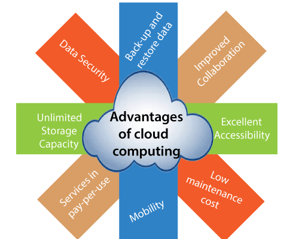

What is Cloud Computing?
Cloud computing stores and access data and programs over the internet instead of hard drives, physical servers, or personal computers. In its simplest terms, cloud computing uses a network of remote servers to store, manage, and process data instead of relying on local storage devices like hard drives. A cloud is essentially a group of servers that are accessible online to store and share information.
Cloud computing is used by individuals and businesses alike to store their data remotely and access it from any computer or device with an internet connection. For example, with cloud computing, you can send files back and forth while working with colleagues, access your photos on your phone or computer, or even use programs like Google Docs or Microsoft Word.
Using the cloud means that the servers you''re using are not located in the exact physical location as you are; they're accessible via the internet, making it more accessible and secure. Also, you can store your data and backup essential files in case of a disaster.
Types According to Service Types
- Infrastructure as a service (IaaS).
- Platform as a service (PaaS).
- Serverless computing ((or function as a service (FaaS)).
- Software as a service (SaaS).
IaaS - Infrastructure-as-a-Service
Infrastructure as a service (IaaS) means the consumer buys access to raw computing hardware over the Internet. IaaS offers infrastructure components that typically run in the provider's data center, such as:- Computing resources (CPU and RAM).
- Data storage.
- hardware.
- Server monitoring.
- Log access.
- measures.
- Load balancing.
- Clustering.
- Managed services.
- Disaster recovery as a service, data backups and replication.
PaaS - Platform-as-a-Service
Platform as a service (PaaS) is a cloud computing service in which a provider delivers hardware and software tools to users. Most PaaS web-based tools aid development and end-users access them via APIs, web portals, or gateway software.For example, a client might both develop an e-commerce website and host its key aspects (including web design, the shopping cart, checkout systems, etc.) on the cloud provider's server. The PaaS vendor provides tools needed for:
- App design and development.
- Software testing and deployment.
- Web service and database integrations.
Serverless Computing (or Function as a Service (FaaS))
In a serverless computing model, the provider is the one who provisions, manages, and scales the cloud-based infrastructure. Developers get to focus on writing code while event-based services (such as AWS Lambda or Azure Functions) handle the execution. Clients only pay for the number of transactions that the function executes.Like with PaaS, the provider is responsible for all routine management (OS updates and patches, security management, capacity planning, cloud monitoring, etc.). When applied correctly, serverless computing leads to:
- Lower costs of development.
- Lower costs of development.
- Quicker time to release.
- More flexibility for the in-house team.
SaaS - Software-as-a-Service
Software as a Service (SaaS) means a client runs the complete app on the cloud and that the provider makes it available to end users over the Internet. Google Documents is the best-known example of SaaS.As the broadest form of cloud computing, SaaS enables a client to think only about how the business and customers use the software, not how to deliver or maintain it.
Advantages of Cloud Computing

- Cost Savings
Cost saving is one of the biggest Cloud Computing benefits. It helps you to save substantial capital cost as it does not need any physical hardware investments. Also, you do not need trained personnel to maintain the hardware. The buying and managing of equipment is done by the cloud service provider. - Strategic edge
Cloud computing offers a competitive edge over your competitors. It is one of the best advantages of Cloud services that helps you to access the latest applications any time without spending your time and money on installations. - High Speed
Cloud computing allows you to deploy your service quickly in fewer clicks. This faster deployment allows you to get the resources required for your system within fewer minutes. - Back-up and restore data
Once the data is stored in a Cloud, it is easier to get the back-up and recovery of that, which is otherwise very time taking process on-premise. - Automatic Software Integration
In the cloud, software integration is something that occurs automatically. Therefore, you don't need to take additional efforts to customize and integrate your applications as per your preferences. - Reliability
Reliability is one of the biggest benefits of Cloud hosting. You can always get instantly updated about the changes. - Mobility
Employees who are working on the premises or at the remote locations can easily access all the could services. All they need is an Internet connectivity. - Unlimited storage capacity
The cloud offers almost limitless storage capacity. At any time you can quickly expand your storage capacity with very nominal monthly fees. - Collaboration
The cloud computing platform helps employees who are located in different geographies to collaborate in a highly convenient and secure manner. - Quick Deployment
Last but not least, cloud computing gives you the advantage of rapid deployment. So, when you decide to use the cloud, your entire system can be fully functional in very few minutes. Although, the amount of time taken depends on what kind of technologies are used in your business.
Disadvantages of Cloud Computing
Here, are significant challenges of using Cloud Computing:
- Cloud Computing
Performance Can Vary When you are working in a cloud environment, your application is running on the server which simultaneously provides resources to other businesses. Any greedy behavior or DDOS attack on your tenant could affect the performance of your shared resource. - Technical Issues
Cloud technology is always prone to an outage and other technical issues. Even, the best cloud service provider companies may face this type of trouble despite maintaining high standards of maintenance. - Security Threat in the Cloud
Another drawback while working with cloud computing services is security risk. Before adopting cloud technology, you should be well aware of the fact that you will be sharing all your company's sensitive information to a third-party cloud computing service provider. Hackers might access this information. - Downtime
Downtime should also be considered while working with cloud computing. That's because your cloud provider may face power loss, low internet connectivity, service maintenance, etc. - Internet Connectivity
Good Internet connectivity is a must in cloud computing. You can't access cloud without an internet connection. Moreover, you don't have any other way to gather data from the cloud. - Lower Bandwidth
Many cloud storage service providers limit bandwidth usage of their users. So, in case if your organization surpasses the given allowance, the additional charges could be significantly costly - Lacks of Support
Cloud Computing companies fail to provide proper support to the customers. Moreover, they want their user to depend on FAQs or online help, which can be a tedious job for non-technical persons.
Top Cloud Computing Services
AWS(Amazon Web Services) Cloud
AWS Cloud is one of the most used cloud computing services. Amazon Web Services is a cloud service provider that can be used independently. Also, AWS can be used together for a broader experience. Using AWS and Elastic Compute Cloud, you can create interactive solutions for your website.
Pros:- AWS has many use cases such as cloud migration, cloud operations, content delivery, database migrations, data lakes, analytics, edge computing, and front-end web & mobile development.
- Elastic Compute Cloud can be used by any industry, such as marketing, advertising, media, entertainment, retail, industrial, financial services, etc.
- You can use AWS's Elastic Compute Cloud if your organization is an enterprise, startup, or public sector.
- Elastic Compute Cloud is easy to set up and adapt for beginners.
- Errors might occur in some data source integrations and underlying infrastructure.
- The call patterns in AWS Lambda might seem complex for some cloud users.
- It needs improvement in storing queries.
Google Cloud
Google Cloud allows you to unify data across your business with storage space. Google Cloud has an open and straightforward way that helps cloud users to bring their data together. Thanks to smart analytics and database solutions, Google Cloud Platform is among the most convenient cloud computing providers.
Pros:- Google Cloud is a user-friendly cloud-based service with a straightforward interface.
- It is one of the security-oriented cloud computing services. The level of security is essential in cloud computing services, and Google Cloud gives importance to this issue.
- Service offerings include smart analytics to have better insights into your data at any scale. Its artificial intelligence also simplifies analytics to cloud users.
- Some cloud users might find it a bit expensive.
- Tutorials and help documentation of Google Cloud Platform need to be improved and updated.
- Google Cloud's dependence on a third party might not be ideal for some cloud users.
Microsoft Azure
Microsoft Azure offers virtual machines and storage accounts that are durable and highly available. It has scalable cloud storage and functional cloud servers as well. In addition, Microsoft Azure has many comprehensive services that can be used for different needs.
Pros:- Azure's SQL database offers managed and clever SQL in the cloud application.
- Creating cloud applications for web and mobile becomes possible with its hybrid cloud services.
- It has a straightforward interface and makes the cloud application functional.
- It would be better if there were more room for Operating System support.
- Virtual machine console access has some drawbacks and deficiencies.
- More application platforms should be available.
IBM Cloud
IBM Cloud is one of the most used cloud providers. IBM Cloud focuses on IaaS, SaaS, and PaaS services mainly. Since it is a customizable platform, you can use it according to your business needs.
Pros:- IBM Cloud offers hybrid cloud management and cloud migration. It is open and managed cloud service.
- A data migration solution can enhance your data integrity. Also, you can increase the ROI of your business.
- IBM Cloud seamlessly integrates with many other platforms, which makes cloud computing functional.
- The queries might run slow sometimes for some cloud users.
- It might be a bit complex to use for beginners at first.
Oracle Cloud
Oracle Cloud is a hybrid cloud service that development teams and IT administrators can use. Oracle Cloud infrastructure offers many services and solutions as a cloud computing service.
Pros:
- Oracle Cloud has a cloud backup and disaster recovery that makes your cloud safe and easy to manage if an error occurs.
- Oracle's FastConnect feature allows you to build multi-cloud environments. Hybrid cloud and multi-cloud strategies of Oracle Cloud help cloud users to store their data practically.
- Its user interface is straightforward to use for beginners. Also, the level of security and fast querying is another advantage. It offers easy migration of the data for cloud users.
- According to some cloud users, customer support needs to be improved.
- It would be better if Oracle Cloud increased the storage capacity and data transfer speed.
- It might be a bit expensive.